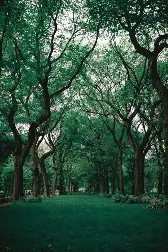
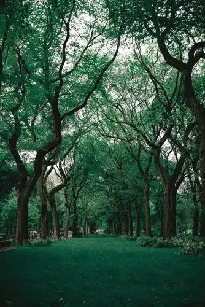

Abelardo's: Savor the Flavors of Mexico
Indulge your taste buds in an authentic culinary experience at Abelardo's, our newest addition to the local dining scene. From savory tacos to mouthwatering enchiladas, immerse yourself in the vibrant and delicious flavors of Mexico. Nestled in the heart of our town, Abelardo's invites you to enjoy traditional dishes crafted with passion and care. Experience the warmth of Mexican hospitality right here in our community.
Read MoreGet Your Green On for the Leprechaun St. Patrick's Day 5K Walk/Run
Lace up your sneakers and join us for the annual Leprechaun St. Patrick's Day 5K Walk/Run race! Whether you're a seasoned runner or a casual walker, this festive event promises fun for all ages. Don your best green attire and join the sea of shamrocks as we traverse the scenic routes through our town. With prizes for the best-dressed leprechauns and post-race celebrations, it's a day of fitness and Irish cheer you won't want to miss! Register now and let the luck of the Irish guide your strides.
Read MoreDiscover the Serenity of Burr Oaks Nature Preserve
Step into a sanctuary of natural beauty at the Burr Oaks Nature Preserve, a hidden gem nestled within our town. Embark on tranquil trails that wind through lush woodlands, where the whispering leaves and melodic birdsong create a symphony of serenity. Marvel at the majestic burr oak trees that have stood sentinel for centuries, and immerse yourself in the peaceful ambiance of this pristine wilderness. Whether you seek solace in nature or an adventure off the beaten path, Burr Oaks Nature Preserve offers an escape to rejuvenate mind, body, and soul.
Read More


 
